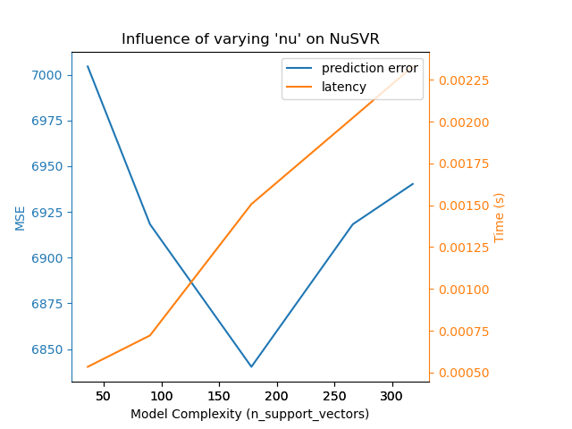

Nota
Haga clic en aquí para descargar el código completo del ejemplo o para ejecutar este ejemplo en su navegador a través de Binder
Influencia de la complejidad del modelo¶
Demostrar cómo la complejidad del modelo influye tanto en la precisión de la predicción como en el rendimiento computacional.
- Utilizaremos dos conjuntos de datos:
Conjunto de datos sobre la diabetes para la regresión. Este conjunto de datos consta de 10 mediciones realizadas a pacientes con diabetes. La tarea consiste en predecir la progresión de la enfermedad;
El conjunto de datos de texto de 20 grupos de noticias para la clasificación. Este conjunto de datos se compone de mensajes de grupos de noticias. La tarea consiste en predecir sobre qué tema (de entre 20 temas) está escrito el mensaje.
- Vamos a modelar la influencia de la complejidad en tres estimadores diferentes:
SGDClassifier(para datos de clasificación) que implementa el aprendizaje por descenso de gradiente estocástico;NuSVR(para datos de regresión) que implementa la regresión de vectores de soporte Nu;GradientBoostingRegressor(para datos de regresión) que construye un modelo aditivo de forma progresiva por etapas.
Hacemos variar la complejidad del modelo mediante la elección de los parámetros relevantes del modelo en cada uno de nuestros modelos seleccionados. A continuación, mediremos la influencia tanto en el rendimiento computacional (latencia) como en la capacidad de predicción (MSE o pérdida de Hamming).
print(__doc__)
# Authors: Eustache Diemert <eustache@diemert.fr>
# Maria Telenczuk <https://github.com/maikia>
# Guillaume Lemaitre <g.lemaitre58@gmail.com>
# License: BSD 3 clause
import time
import numpy as np
import matplotlib.pyplot as plt
from sklearn import datasets
from sklearn.utils import shuffle
from sklearn.metrics import mean_squared_error
from sklearn.svm import NuSVR
from sklearn.ensemble import GradientBoostingRegressor
from sklearn.linear_model import SGDClassifier
from sklearn.metrics import hamming_loss
# Initialize random generator
np.random.seed(0)
Cargar los datos¶
Primero cargamos ambos conjuntos de datos.
Nota
Utilizamos fetch_20newsgroups_vectorized para descargar el conjunto de datos de 20 grupos de noticias. Devuelve características listas para usar.
Nota
La «X» del conjunto de datos de los 20 grupos de noticias es una matriz dispersa, mientras que la «X» del conjunto de datos de la diabetes es una matriz numpy.
def generate_data(case):
"""Generate regression/classification data."""
if case == 'regression':
X, y = datasets.load_diabetes(return_X_y=True)
elif case == 'classification':
X, y = datasets.fetch_20newsgroups_vectorized(subset='all',
return_X_y=True)
X, y = shuffle(X, y)
offset = int(X.shape[0] * 0.8)
X_train, y_train = X[:offset], y[:offset]
X_test, y_test = X[offset:], y[offset:]
data = {'X_train': X_train, 'X_test': X_test, 'y_train': y_train,
'y_test': y_test}
return data
regression_data = generate_data('regression')
classification_data = generate_data('classification')
Influencia de la referencia¶
A continuación, podemos calcular la influencia de los parámetros en el estimador dado. En cada ronda, pondremos el estimador con el nuevo valor de changing_param y iremos recogiendo los tiempos de predicción, el rendimiento de la predicción y las complejidades para ver cómo afectan esos cambios al estimador. Calcularemos la complejidad utilizando complejidad_computadora pasada como parámetro.
def benchmark_influence(conf):
"""
Benchmark influence of `changing_param` on both MSE and latency.
"""
prediction_times = []
prediction_powers = []
complexities = []
for param_value in conf['changing_param_values']:
conf['tuned_params'][conf['changing_param']] = param_value
estimator = conf['estimator'](**conf['tuned_params'])
print("Benchmarking %s" % estimator)
estimator.fit(conf['data']['X_train'], conf['data']['y_train'])
conf['postfit_hook'](estimator)
complexity = conf['complexity_computer'](estimator)
complexities.append(complexity)
start_time = time.time()
for _ in range(conf['n_samples']):
y_pred = estimator.predict(conf['data']['X_test'])
elapsed_time = (time.time() - start_time) / float(conf['n_samples'])
prediction_times.append(elapsed_time)
pred_score = conf['prediction_performance_computer'](
conf['data']['y_test'], y_pred)
prediction_powers.append(pred_score)
print("Complexity: %d | %s: %.4f | Pred. Time: %fs\n" % (
complexity, conf['prediction_performance_label'], pred_score,
elapsed_time))
return prediction_powers, prediction_times, complexities
Seleccionar parámetros¶
Elegimos los parámetros para cada uno de nuestros estimadores haciendo un diccionario con todos los valores necesarios. param_cambiante es el nombre del parámetro que variará en cada estimador. La complejidad se definirá con la etiqueta complexity_label y se calculará con complexity_computer. También hay que tener en cuenta que dependiendo del tipo de estimador estamos pasando datos diferentes.
def _count_nonzero_coefficients(estimator):
a = estimator.coef_.toarray()
return np.count_nonzero(a)
configurations = [
{'estimator': SGDClassifier,
'tuned_params': {'penalty': 'elasticnet', 'alpha': 0.001, 'loss':
'modified_huber', 'fit_intercept': True, 'tol': 1e-3},
'changing_param': 'l1_ratio',
'changing_param_values': [0.25, 0.5, 0.75, 0.9],
'complexity_label': 'non_zero coefficients',
'complexity_computer': _count_nonzero_coefficients,
'prediction_performance_computer': hamming_loss,
'prediction_performance_label': 'Hamming Loss (Misclassification Ratio)',
'postfit_hook': lambda x: x.sparsify(),
'data': classification_data,
'n_samples': 30},
{'estimator': NuSVR,
'tuned_params': {'C': 1e3, 'gamma': 2 ** -15},
'changing_param': 'nu',
'changing_param_values': [0.1, 0.25, 0.5, 0.75, 0.9],
'complexity_label': 'n_support_vectors',
'complexity_computer': lambda x: len(x.support_vectors_),
'data': regression_data,
'postfit_hook': lambda x: x,
'prediction_performance_computer': mean_squared_error,
'prediction_performance_label': 'MSE',
'n_samples': 30},
{'estimator': GradientBoostingRegressor,
'tuned_params': {'loss': 'ls'},
'changing_param': 'n_estimators',
'changing_param_values': [10, 50, 100, 200, 500],
'complexity_label': 'n_trees',
'complexity_computer': lambda x: x.n_estimators,
'data': regression_data,
'postfit_hook': lambda x: x,
'prediction_performance_computer': mean_squared_error,
'prediction_performance_label': 'MSE',
'n_samples': 30},
]
Ejecutar el código y graficar los resultados¶
Hemos definido todas las funciones necesarias para ejecutar nuestro benchmark. Ahora, haremos un bucle sobre las diferentes configuraciones que hemos definido anteriormente. A continuación, podemos analizar los gráficos obtenidos en la prueba comparativa: La relajación de la penalización L1 en el clasificador SGD reduce el error de predicción pero conduce a un aumento del tiempo de entrenamiento. Podemos extraer un análisis similar en relación con el tiempo de entrenamiento, que aumenta con el número de vectores de soporte con un Nu-SVR. Sin embargo, observamos que existe un número óptimo de vectores de soporte que reduce el error de predicción. De hecho, muy pocos vectores de soporte conducen a un modelo infraajustado, mientras que demasiados vectores de soporte conducen a un modelo sobreajustado. Se puede llegar a la misma conclusión para el modelo de gradiente-boosting. La única diferencia con el Nu-SVR es que tener demasiados árboles en el conjunto no es tan perjudicial.
def plot_influence(conf, mse_values, prediction_times, complexities):
"""
Plot influence of model complexity on both accuracy and latency.
"""
fig = plt.figure()
fig.subplots_adjust(right=0.75)
# first axes (prediction error)
ax1 = fig.add_subplot(111)
line1 = ax1.plot(complexities, mse_values, c='tab:blue', ls='-')[0]
ax1.set_xlabel('Model Complexity (%s)' % conf['complexity_label'])
y1_label = conf['prediction_performance_label']
ax1.set_ylabel(y1_label)
ax1.spines['left'].set_color(line1.get_color())
ax1.yaxis.label.set_color(line1.get_color())
ax1.tick_params(axis='y', colors=line1.get_color())
# second axes (latency)
ax2 = fig.add_subplot(111, sharex=ax1, frameon=False)
line2 = ax2.plot(complexities, prediction_times, c='tab:orange', ls='-')[0]
ax2.yaxis.tick_right()
ax2.yaxis.set_label_position("right")
y2_label = "Time (s)"
ax2.set_ylabel(y2_label)
ax1.spines['right'].set_color(line2.get_color())
ax2.yaxis.label.set_color(line2.get_color())
ax2.tick_params(axis='y', colors=line2.get_color())
plt.legend((line1, line2), ("prediction error", "latency"),
loc='upper right')
plt.title("Influence of varying '%s' on %s" % (conf['changing_param'],
conf['estimator'].__name__))
for conf in configurations:
prediction_performances, prediction_times, complexities = \
benchmark_influence(conf)
plot_influence(conf, prediction_performances, prediction_times,
complexities)
plt.show()

- 

Out:
Benchmarking SGDClassifier(alpha=0.001, l1_ratio=0.25, loss='modified_huber',
penalty='elasticnet')
Complexity: 4482 | Hamming Loss (Misclassification Ratio): 0.2541 | Pred. Time: 0.023992s
Benchmarking SGDClassifier(alpha=0.001, l1_ratio=0.5, loss='modified_huber',
penalty='elasticnet')
Complexity: 1668 | Hamming Loss (Misclassification Ratio): 0.2854 | Pred. Time: 0.017126s
Benchmarking SGDClassifier(alpha=0.001, l1_ratio=0.75, loss='modified_huber',
penalty='elasticnet')
Complexity: 874 | Hamming Loss (Misclassification Ratio): 0.3143 | Pred. Time: 0.012552s
Benchmarking SGDClassifier(alpha=0.001, l1_ratio=0.9, loss='modified_huber',
penalty='elasticnet')
Complexity: 663 | Hamming Loss (Misclassification Ratio): 0.3268 | Pred. Time: 0.014147s
Benchmarking NuSVR(C=1000.0, gamma=3.0517578125e-05, nu=0.1)
Complexity: 36 | MSE: 7004.5333 | Pred. Time: 0.000534s
Benchmarking NuSVR(C=1000.0, gamma=3.0517578125e-05, nu=0.25)
Complexity: 90 | MSE: 6918.2577 | Pred. Time: 0.000722s
Benchmarking NuSVR(C=1000.0, gamma=3.0517578125e-05)
Complexity: 178 | MSE: 6840.2763 | Pred. Time: 0.001507s
Benchmarking NuSVR(C=1000.0, gamma=3.0517578125e-05, nu=0.75)
Complexity: 266 | MSE: 6918.2492 | Pred. Time: 0.002023s
Benchmarking NuSVR(C=1000.0, gamma=3.0517578125e-05, nu=0.9)
Complexity: 318 | MSE: 6940.2899 | Pred. Time: 0.002330s
Benchmarking GradientBoostingRegressor(n_estimators=10)
Complexity: 10 | MSE: 4062.4219 | Pred. Time: 0.000183s
Benchmarking GradientBoostingRegressor(n_estimators=50)
Complexity: 50 | MSE: 3156.4420 | Pred. Time: 0.000260s
Benchmarking GradientBoostingRegressor()
Complexity: 100 | MSE: 3301.5938 | Pred. Time: 0.000340s
Benchmarking GradientBoostingRegressor(n_estimators=200)
Complexity: 200 | MSE: 3235.9376 | Pred. Time: 0.000434s
Benchmarking GradientBoostingRegressor(n_estimators=500)
Complexity: 500 | MSE: 3473.6361 | Pred. Time: 0.000832s
Conclusión¶
Como conclusión, podemos deducir las siguientes ideas:
un modelo más complejo (o expresivo) requerirá un mayor tiempo de entrenamiento;
un modelo más complejo no garantiza la reducción del error de predicción.
Estos aspectos están relacionados con la generalización del modelo y con evitar el infra o sobreajuste del mismo.
Tiempo total de ejecución del script: (0 minutos 41.995 segundos)